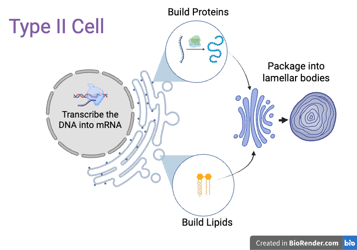

Part 3 of 3 — How Lungs Work. You have learned how air reaches the alveoli and why surface tension is a problem. Now see how the lungs solve that problem — and what happens when the solution breaks down.
The Solution: Pulmonary Surfactant
Pulmonary surfactant is a mixture of fats and proteins that coats the inside of the alveoli. It reduces surface tension — keeping the alveoli open and making each breath much easier.
Remember the Type II cells from the first section? These are the specialized cells in the alveolar walls that produce, store, and release surfactant continuously throughout life.
They work like tiny factories — always running, always restocking the supply. Each Type II cell makes surfactant in three steps: Build it, Pack it, Release it.
Three Steps of Production
Build it — the cell makes the fats and proteins that go into surfactant.

Step 1 — Reading the Gene (Transcription)Inside the cell’s nucleus, the SFTPC gene is read like an instruction manual. A copy of those instructions is made in the form of a molecule called mRNA (messenger RNA). Think of mRNA as a paper copy of a recipe — the original stays safely in the nucleus while the copy travels out into the rest of the cell.Step 2 — Building the Protein (Translation)The mRNA travels to a ribosome — a tiny protein-building machine inside the cell. The ribosome reads the mRNA instructions and links together a chain of building blocks to create the pro‑SP‑C protein, the large, unfinished version of SP‑C.Step 3 — Processing and CuttingPro‑SP‑C is not ready to use yet. It moves through the cell where it is trimmed and folded into its final working shape. Special proteins act like molecular scissors, cutting away the parts that are no longer needed. What remains is the finished SP‑C protein, ready to be packaged with fats into surfactant.
Why this matters: In SP‑C deficiency, the SFTPC gene has a mutation — an error in the instructions. The mRNA copy carries that error to the ribosome, so a misfolded pro‑SP‑C protein is built. When the cell tries to cut and fold it, the process fails. The broken protein gets stuck inside the cell instead of becoming working surfactant.
Pack it — the ingredients are packaged into small storage compartments called lamellar bodies — like tiny wrapped parcels stored inside the cell, ready to be opened.
Release it — when signaled, such as during a deep breath, the parcels move to the edge of the cell and release their contents into the alveolus; the surfactant spreads across the wet surface in a thin film.
Recycling and Cleanup
The lungs do not waste surfactant. Much of the used surfactant is pulled back into the Type II cells, refreshed, and released again. What cannot be recycled is cleaned up by the alveolar macrophages — the immune cells you learned about earlier — which engulf and break down old or damaged surfactant.
The Three-Way Balance That Keeps Lungs Healthy
Type II cells continuously produce new surfactant
Used surfactant is recycled back into Type II cells for reuse
Old or damaged surfactant is cleared by alveolar macrophages
When This Process Breaks Down
Some children are born with a gene change that disrupts this system. Their Type II cells may not be able to make working surfactant — or the surfactant they make does not function properly. This is what happens in SP‑C deficiency. In the next section you will start learning about that condition specifically.